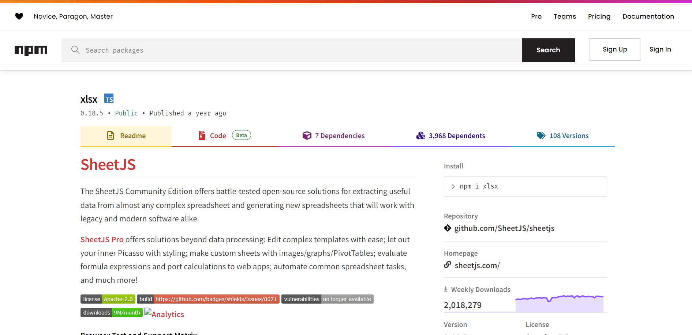

Films:
The poems of life
Films, a kind of moving image, have gradually developed from the public's novelty hunting to one of the important tools of mass media, communication and entertainment in the 21st century. Film is also a huge influence in the fields of art, technology and politics.
Preparation
Data Sources
- IMDB: IMDB is an online database of movie actors, movies, TV shows, TV entertainers, video games, and movie production teams.
- TMDB: TMDB is a community-built online database of movies, TV shows, cast and crew.
Preparation Steps
Before formally producing the system, we have carried out the following preparatory work:
- Download and Organize Data: We downloaded the data in xlsx format from IMDB and consulted TMDB to supplement the incomplete data.
- Format Conversion: We used xlsx.full.min.js to convert the data format from xlsx to js.
- Start: We started to design the system with the processed data. 
Introduction
Film Title: The Godfather
Year: 1972
Runtime: 175 min
Genre: Crime,Drama
IMDB Rating: 9.2
Gross: $134966411
Certificate: A
Overview: An organized crime dynasty's aging patriarch transfers control of his clandestine empire to his reluctant son.

About this Project
Our Team
- Jiajun Zhu: A junior from ZJU, CKC, Mixed Class 2205, majoring in computer science and technology.
- Yiduo Xiong: A junior from ZJU, CKC, Mixed Class 2205, majoring in computer science and technology.
- Yuelin Yang: A junior from ZJU, CKC, Mixed Class 2201, majoring in computer science and technology.
Source of Inspiration
The globally acclaimed House of Cards premiered on streaming service Netflix on February 1, 2013. The producer analyzed through big data found it would be popular, so this web drama was produced.

Brief Introduction
This project is designed based on echarts.We made a personal design after learning from the official website documents:
- Design: After completing the data collation, we made a scientific design from three aspects: genre, director, and actors.
- Code: Painting.js is the core file of our project system, used to draw images and complete interactions.The most complicated thing in the code is the relationship diagram, because we need to design the loop to get all the data involved and consider the special case of self-directed and self-acted.
- Interaction: The content of the official website is not comprehensive. We designed four layers of click interactions after self-study.
References
- Film Data: IMDB top 1000 list
- Supplementary Data: https://www.themoviedb.org/